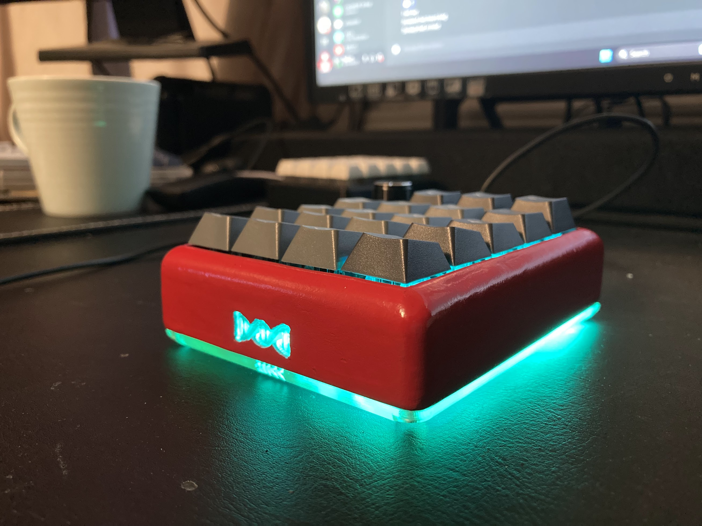
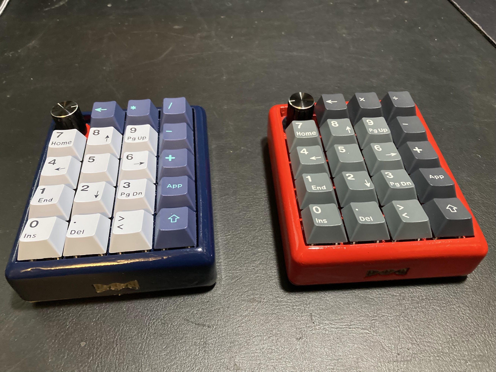
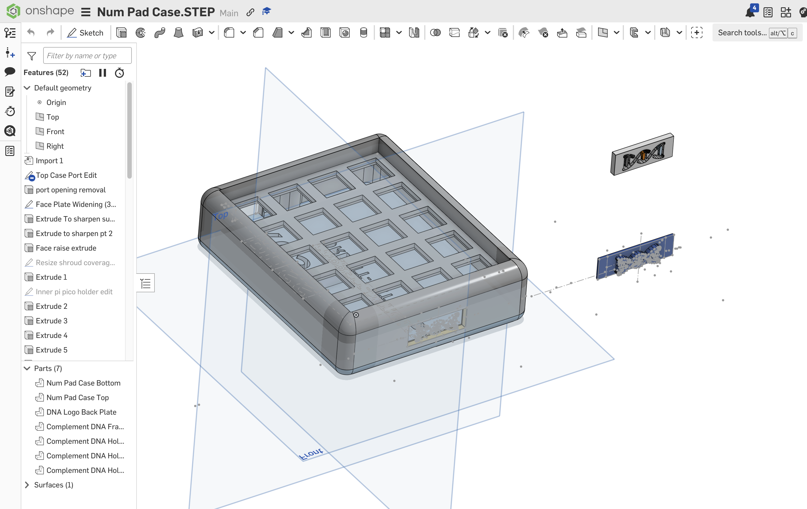

3D print and soldering
Numberpad
A compact numberpad project focused on the full build path: printed enclosure, soldered electronics, switch installation, firmware setup, and final desk-ready assembly. The firmware is written with KMK/CircuitPython and tracked in the numpad KMK code repo.



1 / 3